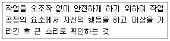
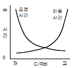
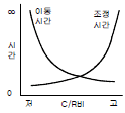
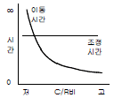
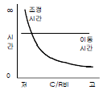
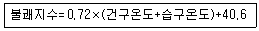
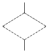
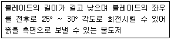

건설안전산업기사 (2013-03-10 기출문제)
1과목: 산업안전관리론
1. 다음 중 직무적성검사에 있어 갖추어야 할 요건으로 볼 수 없는 것은?
- 규준
- 타당성
- 표준화
- 융통성
(정답률: 70%)

2. 기억의 과정 중 과거의 학습경험을 통해서 학습된 행동이 현재와 미래에 지속되는 것을 무엇이라 하는가?
- 기명(memorizing)
- 파지(retention)
- 재생(recall)
- 재인(recognition)
(정답률: 47%)
3. 다음 중 교육훈련 평가의 4단계를 올바르게 나열한 것은?
- 학습 → 반응 → 행동 → 결과
- 학습 → 행동 → 반응 → 결과
- 행동 → 반응 → 학습 → 결과
- 반응 → 학습 → 행동 → 결과
(정답률: 37%)
4. 다음 중 산업안전보건법에 따라 안전ㆍ보건진단을 받아 안전보건개선계획을 수립ㆍ제출하도록 명할 수 있는 사업장에 해당하지 않는 것은?
- 직업병에 걸린 사람이 연간 1명 발생한 사업장
- 산업재해율이 같은 업종 평균 산업재해율의 3배인 사업장
- 작업환경 불량, 화재ㆍ폭발 또는 누출사고 등으로 사회적 물의를 일으킨 사업장
- 산업재해율이 같은 업종의 규모별 평균 산업재해율보다 높은 사업장 중 사업주가 안전ㆍ보건조치의무를 이행하지 아니하여 발생한 중대재해 발생 사업장
(정답률: 72%)
5. 산업안전보건법상 사업내 안전ㆍ보건교육에 있어 관리감독자 정기안전ㆍ보건교육에 해당하는 것은? (단, 산업안전보건법 및 일반관리에 관한 사항은 제외한다.)
- 정리정돈 및 청소에 관한 사항
- 작업 개시 전 점검에 관한 사항
- 작업공정의 유해ㆍ위험과 재해 예방대책에 관한사항
- 기계ㆍ기구의 위험성과 작업의 순서 및 동선에 관한사항
(정답률: 56%)
6. 다음 중 리더십의 유효성(有效性)을 증대시키는 1차적 요소와 관계가 가장 먼 것은?
- 리더 자신
- 조직의 규모
- 상황적 변수
- 추종자 집단
(정답률: 44%)
7. 의무안전인증 대상 보호구 중 차광보안경의 사용구분에 따른 종류가 아닌 것은?
- 보정용
- 용접용
- 복합용
- 적외선용
(정답률: 61%)
8. 다음 중 산업안전보건법상 용어의 정의가 잘못 설명된 것은?
- “사업주”란 근로자를 사용하여 사업을 하는 자를 말한다.
- “근로자대표”란 근로자의 과반수로 조직된 노동조합이 없는 경우에는 사업주가 지정하는 자를 말한다.
- “산업재해”란 근로자가 업무에 관계되는 건설물ㆍ설비ㆍ원재료ㆍ가스ㆍ증기 등에 의하거나 작업 또는 그 밖의 업무로 인하여 사망 또는 부상 하거나 질병에 걸리는 것을 말한다.
- “안전ㆍ보건진단”이란 산업재해를 예방하기 위하여 잠재적 위험성을 발견하고 그 개선대책을 수립할 목적으로 고용노동부장관이 지정하는 자가 하는 조사ㆍ평가를 말한다.
(정답률: 67%)
9. 다음 설명에 해당하는 위험 예지활동은?

- 지적확인
- Tool Box Meeting
- 터치 앤 콜
- 삼각위험예지훈련
(정답률: 63%)
10. 스트레스 주요 원인 중 마음속에서 일어나는 내적 자극요인으로 볼 수 없는 것은?
- 자존심의 손상
- 업무상 죄책감
- 현실에서의 부적응
- 대인 관계상의 갈등
(정답률: 53%)
11. 다음 중 재해의 기본원인을 4M으로 분류할 때 작업의 정보, 작업방법, 환경 등의 요인이 속하는 것은?
- Man
- Machine
- Media
- Method
(정답률: 66%)
12. 다음 중 재해를 분석하는 방법에 있어 재해건수가 비교적 적은 사업장의 적용에 적합하고, 특수재해나 중대재해의 분석에 사용하는 방법은?
- 개별분석
- 통계분석
- 사전분석
- 크로스(Cross)분석
(정답률: 62%)
13. 사업장 무재해 운동 추진 및 운영에 있어 무재해 목표설정의 기준이 되는 무재해 시간은 무재해 운동을 개시하거나 재개시한 날부터 실근무자수와 실근로시간을 곱하여 산정하는데 다음 중 실근로시간의 산정이 곤란한 사무직 근로자 등의 경우에는 1일 몇 시간 근무한 것으로 보는가?
- 6시간
- 8시간
- 9시간
- 10시간
(정답률: 79%)
14. 다음 중 인간이 자기의 실패나 약점을 그럴듯한 이유를 들어 남의 비난을 받지 않도록 하며 또한 자위도 하는 방어기제를 무엇이라 하는가?
- 보상
- 투사
- 합리화
- 전이
(정답률: 72%)
15. 다음 중 학습지도의 원리에 해당하지 않는 것은?
- 자기활동의 원리
- 사회화의 원리
- 직관의 원리
- 분리의 원리
(정답률: 51%)
16. 다음 중 안전검점 체크리스트 작성시 유의해야 할 사항과 관계가 가장 적은 것은?
- 사업장에 적합한 독자적인 내용으로 작성한다.
- 점검 항목은 전문적이면서 간략하게 작성한다.
- 관계의 의견을 통하여 정기적으로 검토ㆍ보안 작성한다.
- 위험성이 높고, 긴급을 요하는 순으로 작성한다.
(정답률: 49%)
17. 의식수준 5단계 중 의식수준의 저하로 인한 피로와 단조로움의 생리적 상태가 일어나는 단계는?
- PhaseⅠ
- PhaseⅡ
- PhaseⅢ
- PhaseⅣ
(정답률: 60%)
18. 산업안전보건법령상 안전ㆍ보건표지 중 안내표지의 종류에 해당하지 않는 것은?
- 들것
- 세안장치
- 비상용기구
- 허가대상물질 작업장
(정답률: 59%)
19. 매슬로우(Maslow)의 욕구 단계 이론 중 인간에게 영향을 줄 수 있는 불안, 공포, 재해 등 각종 위험으로부터 해방 되고자 하는 욕구에 해당되는 것은?
- 사회적 욕구
- 존경의 욕구
- 안전의 욕구
- 자아실현의 욕구
(정답률: 81%)
20. 상시근로자수가 75명인 사업장에서 1일 8시간씩 연간320일을 작업하는 동안에 4건의 재해가 발생하였다면 이 사업장의 도수율은 약 얼마인가?
- 17.68
- 19.67
- 20.83
- 22.8
(정답률: 61%)
2과목: 인간공학 및 시스템안전공학
21. 다음 중 정보의 전달방법으로 시각적 표시장치보다 청각적 표시방법을 이용하는 것이 적절한 경우는?
- 정보의 내용이 복잡하고 긴 경우
- 정보가 시간적인 사상을 다룰 때
- 즉각적인 행동을 요구하지 않는 경우
- 정보가 공간적인 위치를 다루는 경우
(정답률: 55%)
22. 각각 10000 시간의 수명을 가진 A, B 두 요소가 병렬로 이루고 있을 때 이 시스템이 수명은 얼마인가? (단, 요소 A, B 의 수명은 지수분포를 따른다.)
- 5000 시간
- 1000 시간
- 15000 시간
- 20000 시간
(정답률: 57%)
23. 다음 중 위험처리 방법에 관한 설명으로 적절하지 않은 것은?
- 위험처리 대책 수립시 비용문제는 제외된다.
- 재정적으로 처리하는 방법에는 보유와 전가 방법이 있다.
- 위험의 제어 방법에는 회피, 손실제어, 위험분리, 책임 전가 등이 있다.
- 위험처리 방법에는 위험을 제어하는 방법과 재정적으로 처리하는 방법이 있다.
(정답률: 66%)
24. 다음 중 조종-반응 비율(C/R비)에 따른 이동시간과 조정시간의 관계로 옳은 것은?




(정답률: 61%)
25. 일반적으로 인체에 가해지는 온ㆍ습도 및 기류 등의 외적변수를 종합적으로 평가하는 데에는 “불쾌지수”라는 지표가 이용된다. 식이 다음과 같은 경우 건구온도와 습구온도의 단위로 옳은 것은?

- 실효온도
- 화씨온도
- 절대온도
- 섭씨온도
(정답률: 68%)
26. 40phon 이 1sone 일 때 60phon 은 몇 sone 인가?
- 2 sone
- 4 sone
- 6 sone
- 100 sone
(정답률: 53%)
27. 빨강, 노랑, 파랑, 화살표 등 모두 4종류의 신호등이 있다. 신호등은 한 번에 하나의 등만 켜지도록 되어 있다. 1시간동안 측정한 결과 4가지 신호등이 모두 15분씩 켜져 있었다. 이 신호등의 총 정보량은 얼마인가?
- 1 bit
- 2 bit
- 3 bit
- 4 bit
(정답률: 48%)
28. 다음 중 FTA를 이용하여 사고원인의 분석 등 시스템의 위험을 분석할 경우 기대 효과와 관계없는 것은?
- 사고원인 분석의 정량화 가능
- 사고원인 규명의 귀납적 해석가능
- 안전점검을 위한 체크리스트 작성 가능
- 복잡하고 대형화된 시스템의 신뢰성분석 및 안전성 분석가능
(정답률: 49%)
29. 다음 중 인체계측에 있어 구조적 인체치수에 관한 설명으로 옳은 것은?
- 움직이는 신체의 자세로부터 측정한다.
- 실제의 작업 중 움직임을 계측, 자료를 취합하여 통계적으로 분석한다.
- 정해진 동작에 있어 자세, 관절 등의 관계를 3차원 디지타이저(digitizer), 모아레(Moire)법 등의 복합적인 장비를 활용하여 측정한다.
- 고정된 자세에서 마틴(Martin)식 인체측정기로 측정한다.
(정답률: 46%)
30. 다음 중 정신적 작업 부하에 대한 생리적 측정치에 해당하는 것은?
- 에너지대사량
- 최대산소소비능력
- 근전도
- 부정맥 지수
(정답률: 46%)
31. 다음 중 Fussell의 알고리즘을 이용하여 최소컷셋을 구하는 방법에 대한 설명으로 적절하지 않은 것은?
- OR 게이트 항상 컷셋의 수를 증가시킨다.
- AND 게이트는 항상 컷셋의 크기를 증가시킨다.
- 중복되는 사건이 많은 경우 매우 간편하고 적용하기 적합하다.
- 불대수(Boolean algebra)이론을 적용하여 시스템 고장을 유발시키는 모든 기본사상들의 조합을 구한다.
(정답률: 39%)
32. 다음 중 부품배치의 원칙에 해당하지 않는 것은?
- 사용순서의 원칙
- 사용빈도의 원칙
- 중요성의 원칙
- 신뢰성의 원칙
(정답률: 71%)
33. 인간-기계 시스템의 구성요소에서 다음 중 일반적으로 신뢰도가 가장 낮은 요소는? (단, 관련 요건은 동일하다는 가정이다.)
- 수공구
- 작업자
- 조종장치
- 표시장치
(정답률: 61%)
34. 다음 중 정량적 표시장치의 눈금 수열로 가장 인식하기 쉬운 것은?
- 1, 2, 3 …
- 2, 4, 5 …
- 3, 6, 9 …
- 4, 8, 12 …
(정답률: 70%)
35. 의사결정에 있어 결정자가 각 대안에 대해 어떤 결과가 발생할 것인가를 알고 있으나, 주어진 상태에 대한 확률을 모를 경우에 행하는 의사결정을 무엇이라 하는가?
- 대립 상태 하에서 의사결정
- 위험함 상황 하에서 의사결정
- 확실한 상황 하에서 의사결정
- 불확실 상황 하에서 의사결정
(정답률: 69%)
36. 시스템 설계 과정의 주요 단계 중 계면설계에 있어 계면설계를 위한 인간 요소 자료로 볼 수 없는 것은?
- 상식과 경험
- 전문가의 판단
- 실험절차
- 정량적 자료집
(정답률: 39%)
37. 다음 중 조도에 관한 설명으로 틀린 것은?
- 조도는 거리에 비례하고, 광도에 반비례한다.
- 어떤 물체나 표면에 도달하는 광의 밀도를 말한다.
- 1[lux] 란 1촉광의 점광원으로부터 1m 떨어진 곡면에 비추는 광의 밀도를 말한다.
- 1[fc] 란 1촉광의 점광원으로부터 1 foot 떨어진 곡면에 비추는 광의 밀도를 말한다.
(정답률: 56%)
38. 다음 중 예비위험분석(PHA)에서 위험의 정도를 분류하는 4가지 범주에 속하지 않는 것은?
- catastrophic
- critical
- control
- marginal
(정답률: 51%)
39. 다음 중 사고나 위험, 오류 등의 정보를 근로자의 직접 면접, 조사 등을 사용하여 수집하고, 인간-기계 시스템 요소들의 관계 규명 및 중대 작업 필요조건 확인을 통한 시스템 개선을 수행하는 기법은?
- 직무 위급도 분석
- 인간 실수율 예측기법
- 위급사건기법
- 인간 실수 자료 은행
(정답률: 32%)
40. FT도에 사용되는 다음의 기호가 의미하는 내용으로 옳은 것은?

- 생략사상으로서 간소화
- 생략사상으로서 인간의 실수
- 생략사상으로서 조직자의 간과
- 생략사상으로서 시스템의 고장
(정답률: 45%)
3과목: 건설시공학
41. 철골 용접접합에 대한 용어설명 중 옳지 않은 것은?
- 모살용접 : 목두께의 방향이 모재의 면과 45° 또는 거의 45° 의 각을 이루는 용접
- 슬래그(slag) : 용접부에 잔류하는 산화물 등의 비금속 물질이 용접금속 속에 녹아 있는 것
- 블로 홀(blow hole) : 비드(bead)의 가장자리에서 모재가 깊이 먹어들어간 모양으로 된 것
- 오버랩(overlap) : 용접금속이 모재에 융착되지 않고 단순히 겹쳐있는 용접
(정답률: 44%)
42. 콘크리트 비파괴검사 중에서 강도를 추정하는 측정 방법과 거리가 먼 것은?
- 슈미트 해머법
- 초음파 속도법
- 인발법
- 방사선 투과법
(정답률: 49%)
43. 공공 혹은 공익 프로젝트에 있어서 자금을 조달하고, 설계, 엔지니어링 및 시공 전부를 도급받아 시설물을 완성 하고 그 시설을 일정기간 운영하여 투자금을 회수한 후 발주자에게 시설을 인도하는 공사계약방식은?
- CM계약방식
- 공동도급방식
- 파트너링방식
- BOT방식
(정답률: 76%)
44. 다음 용접방식 중 용접기구에 의한 분류가 아닌 것은?
- 아크 수동용접
- 일렉트로 슬래그 용접
- 가스 압접
- 필렛 용접
(정답률: 44%)
45. 철근콘크리트 보강 블록공사에 대한 설명 중 옳지 않은 것은?
- 보강근이 들어간 부분은 블록 2단마다 콘크리트나 모르타르를 충분히 충전시켜 철근이 녹스는 것을 방지한다.
- 블록 쌓기 시 되도록 고저차가 없도록 수평이 되게 쌓아 올린다.
- 벽의 세로근은 원칙적으로 이음을 만들지 않고 기초와 테두리보에 정착시킨다.
- 블록의 빈속을 철근과 콘크리트로 보강하여 장막벽을 구성하는 것이다.
(정답률: 55%)
46. 기초콘크리트에 앵커볼트를 묻을 구멍을 내 두었다가 콘크리트가 경화한 뒤 볼트에 그라우트 모르타르로 충전하면서 고정하는 공법으로, 소규모 앵커볼트 매입에 적당한 것은?
- 고정매입공법
- 가동매입공법
- 전면바름공법
- 전면그라우트공법
(정답률: 47%)
47. 철골조 용접 공작에서 용접봉의 피복재 역할로 옳지 않은 것은?
- 함유 원소를 이온화하여 아크를 안정시킨다.
- 용착 금속에 합금 원소를 가한다.
- 용착 금속의 산화를 촉진하여 고열을 발생시킨다.
- 용융 금속의 탈산, 정련을 한다.
(정답률: 69%)
48. 콘크리트 강도에 가장 큰 영향을 미치는 배합요소는?
- 모래와 자갈의 비율
- 물과 시멘트의 비율
- 시멘트와 모래의 비율
- 시멘트와 자갈의 비율
(정답률: 78%)
49. 낭비를 최소화하는 가장 효율적인 건설생산 시스템을 의미하는 것은?
- 인공지능(Artificial Intelligence)
- 린 건설(Lean Construction)
- 건설관리(Construction Management)
- 품질관리(Quality Control)
(정답률: 60%)
50. 흙을 이김에 따라 약해지는 정도를 표시한 것은?
- 간극비
- 함수비
- 포화도
- 예민비
(정답률: 74%)
51. 이형철근가공 시 갈고리(hook)를 설치하지 않아도 되는 곳은?
- 지중보의 돌출부분의 철근
- 스터럽
- 굴뚝의 철근
- 기둥 및 보의 돌출부분의 철근
(정답률: 47%)
52. 시공과정상 불가피하게 콘크리트를 이어치기할 때 발생하는 시공불량 이음부를 무엇이라고 하는가?
- 컨스트럭션 조인트(construction joint)
- 콜드 조인트(cold joint)
- 컨트롤 조인트(control joint)
- 익스팬션 조인트(expansion joint)
(정답률: 71%)
53. 콘크리트의 거푸집 측압 증가 요인이 아닌 것은?
- 타설 속도가 빠를수록 증가한다.
- 슬럼프가 클수록 증가한다.
- 다짐이 적을수록 증가한다.
- 경화속도가 늦을수록 증가한다.
(정답률: 68%)
54. 건축공사 공정의 공기단축 기법으로 사용되는 것은?
- MCX(Minimum Cost Expedition)
- TQC(Total Quality Control)
- TBM(Tool Box Meeting)
- CIC(Computer Integrated Construction)
(정답률: 57%)
55. 표토를 제거하고 건물의 기둥 위치에 3 ~ 3.5m 지름의 우물을 파 기초를 축조하고, 그 기초 상부에 철골기둥을 세우고 1층 바닥부터 콘크리트를 친 후 지하를 향해 공사해 나가는 흙파기 공법은?
- 심초 공법
- 뉴매틱 웰 케이슨 공법
- 개방잠함 공법
- 톱다운 공법
(정답률: 36%)
56. 토공사의 굴착기계 용도에 관한 설명으로 옳지 않은 것은?
- 백호는 기체보다 낮은 곳을 굴착하는데 사용한다.
- 파워쇼벨은 기체보다 높은 곳을 굴착하는데 사용한다.
- 드래그라인은 기체보다 낮은 곳의 흙을 긁어모으는데 사용한다.
- 클램쉘은 기체보다 높은 곳의 흙과 자갈을 긁어내는 데 사용한다.
(정답률: 73%)
57. 흙막이 공법 선정 시 검토해야할 사항 중 가장 거리가 먼 것은?
- 주변 구조물의 지하 매설물 상태
- 대지주변의 유동인구검토
- 지하수의 배수 및 치수공법 검토
- 공사기간과 경제성 검토
(정답률: 64%)
58. QC의 7대 도구 중 결함부나 기타 시공불량 등 항목을 구분하여 크기순으로 나열한 것으로, 결함항목을 집중적으로 감소시키는데 효과적으로 사용되는 것은?
- 파레토도
- 히스토그램
- 산포도
- 관리도
(정답률: 68%)
59. 보일링(boiling)이나 부풀어오름을 방지하기 위한 대책으로 옳지 않은 것은?
- 흙막이벽의 타입깊이를 늘린다.
- 흙막이 외부의 지반면을 진동 가압한다.
- 웰포인트로 지하수위를 낮춘다.
- 약액주입 등으로 굴착지면을 지수한다.
(정답률: 64%)
60. 주문받은 건설업자가 대상계획의 기업, 금융, 토지조달, 설계, 시공 기타 모든 요소를 포괄하는 도급계약방식은?
- 실비청산 보수가산도급
- 정액도급
- 공동도급
- 턴키(turn-key)도급
(정답률: 80%)
4과목: 건설재료학
61. 각종 단열재에 대한 설명 중 옳지 않은 것은?
- 암면은 암석으로부터 인공적으로 만들어진 내열성이 높은 광물섬유를 이용하여 만드는 제품으로 단열성, 흡음성이 뛰어나다.
- 세라믹 파이버의 원료는 실리카와 알루미나이며, 알루미나의 함유량을 늘이면 내열성이 상승한다.
- 경질 우레탄폼은 방수성, 내투습성이 뛰어나기 때문에 방습층을 겸한 단열재로 사용된다.
- 펄라이트 판은 천연의 목질섬유를 원료로 하며, 단열성이 우수하여 주로 건축물이 외벽 단열재 바름에 사용된다.
(정답률: 52%)
62. 보통 포틀랜드시멘트의 성질에 관한 설명 중 옳지 않은 것은?
- 시멘트의 분말도가 수화속도에 큰 영향을 준다.
- 시멘트의 분말도가 높으면 응결, 경화 속도가 빠르다.
- 온도와 습도가 높으면 응결시간이 느리며 경화가 지연된다.
- 혼합용수가 많으면 응결, 경화가 느리다.
(정답률: 53%)
63. P.S.콘크리트 부재 제작 시 프리스트레스(prestress)를 도입시키기 위해 개발된 시멘트는?
- 제트 시멘트
- 알루미나 시멘트
- 인산 시멘트
- 팽창 시멘트
(정답률: 54%)
64. 합성수지 중 PVC라 불리우며 사용온도는 -10 ~ 60℃이며 판재, 타일, 파이프, 도료 등으로 사용되는 것은?
- 염화비닐 수지
- 폴리에틸렌 수지
- 아크릴 수지
- 페놀 수지
(정답률: 56%)
65. 다음 미장재료 중 수경성에 해당되지 않는 것은?
- 보드용 석고 플라스터
- 돌로마이트 플라스터
- 인조석 바름
- 시멘트 모르타르
(정답률: 68%)
66. 다음 철물 중 창호용이 아닌 것은?
- 안장쇠
- 크레센트
- 도어체인
- 플로어힌지
(정답률: 38%)
67. 목재의 성질에 대한 설명 중 옳지 않은 것은?
- 수분을 흡수하면 변형이 커진다.
- 열전도율이 큰 재료이다.
- 인화성이 강하다.
- 부패하기 쉽다.
(정답률: 67%)
68. 콘크리트구조물의 크리프(Creep) 현상에 대한 설명 중 옳지 않은 것은?
- 작용응력이 클수록 크리프는 크다.
- 물시멘트비가 클수록 크리프는 크다.
- 외부습도가 높을수록 크리프는 적다.
- 구조부재의 치수가 클수록 크리프는 크다.
(정답률: 43%)
69. 목재 섬유포화점의 범위는 대략 얼마인가?
- 약 5 ~ 10%
- 약 15 ~ 20%
- 약 25 ~ 30%
- 약 35 ~ 40%
(정답률: 62%)
70. 굳지 않은 콘크리트의 성질에 관한 기술 중 옳은 것은?
- 워커빌리티는 정량적인 수치로 표현하는 것이 용이하다.
- 컨시스턴시는 콘크리트의 유동속도와 무관하다.
- 플라스티시티는 굵은 골재의 최대치수, 잔골재율, 잔골재입도 등에 의한 마감성의 난이를 표시하는 성질이다.
- 같은 슬럼프를 나타내는 컨시스턴시의 것이라도 워커빌리티가 동일하다고는 할 수 없다.
(정답률: 55%)
71. 다음 재료 중 무기재료에 속하는 재료는?
- 알루미늄
- 목재
- 플라스틱
- 섬유판
(정답률: 39%)
72. 크롬ㆍ니켈 등을 함유하며 탄소량이 적고 내식성, 내열성이 뛰어나며 건축 재료로 다방면에 사용되는 특수강은?
- 동강(Copper steel)
- 주강(Steel casting)
- 스테인리스강(Stainless steel)
- 저탄소강(Low Carbon Steel)
(정답률: 73%)
73. 목재의 역학적 성질에 영향을 미치는 요인과 가장 관계가 먼 것은?
- 함수율
- 비중
- 나이테
- 옹이
(정답률: 59%)
74. 회반죽 바름의 주원료가 아닌 것은?
- 소석회
- 점토
- 모래
- 해초풀
(정답률: 64%)
75. 콘크리트용 골재에 관한 설명으로 옳지 않은 것은?
- 골재의 조립률이란 일정 용기내에 골재가 차지하는 실제 용적의 비율이다.
- 일반적으로 비중이 큰 것은 공극, 흡수율이 적으므로 동결에 의한 손실도 적고 내구성이 크다.
- 실적율이 클수록 골재의 입도분포가 적당하여 시멘트 페이스트량이 적게 든다.
- 알칼리 골재반응은 골재 중의 실리카질광물이 시멘트중의 알칼리성분과 화학적으로 반응하는 것이다.
(정답률: 31%)
76. 연질의 석재를 다듬을 때 쓰는 방법으로 양날 망치로 정다듬한 면을 일정방향으로 찍어 다듬는 돌표면 마무리 방법은?
- 잔다듬
- 도드락다듬
- 혹두기
- 거친갈기
(정답률: 69%)
77. 알루미늄창호(aluminium sash)에 대한 설명으로 옳지 않은 것은?
- 강재창호에 비하여 경량이다.
- 녹슬지 않아 유지관리가 쉽다.
- 가공이 쉽고 기밀성이 우수하다.
- 알칼리성에 강하고 사용수명이 길다.
(정답률: 65%)
78. 지하실 방수공사에 쓰이는 석유아스팔트로 가장 적합한 것은?
- 아스팔타이트
- 스트레이트 아스팔트
- 레이크 아스팔트
- 로크 아스팔트
(정답률: 65%)
79. 다음 중 방청도료에 해당되지 않는 것은?
- 광명단
- 알루미늄도료
- 징크로메이트
- 오일스테인
(정답률: 52%)
80. 다음 석재 중 내장용으로 주로 사용하는 석재는?
- 대리석
- 화강암
- 안산암
- 점판암
(정답률: 73%)
5과목: 건설안전기술
81. 비계 등을 조립하는 경우 강재와 강재의 접속부 또는 교차부를 연결시키기 위한 전용철물은?
- 클램프
- 가새
- 턴버클
- 샤클
(정답률: 55%)
82. 사질지반에 흙막이를 하고 터파기를 실시하면 지반수위와 터파기 저면과의 수위차에 의해 보일링현상이 발생할 수 있다. 이때 이 현상을 방지하는 방법이 아닌 것은?
- 흙막이 벽의 저면타입깊이를 크게 한다.
- 차수성이 높은 흙막이벽을 사용한다.
- 웰포인트로 지하수면을 낮춘다.
- 주동토압을 크게 한다.
(정답률: 51%)
83. 포화도 80%, 함수비 28%, 흙 입자의 비중 2.7일 때 공극비를 구하면?
- 0.940
- 0.945
- 0.950
- 0.955
(정답률: 49%)
84. 거푸집에 작용하는 하중 중에서 연직하중이 아닌 것은?
- 거푸집의 자중
- 작업원의 작업하중
- 가설설비의 충격하중
- 콘크리트의 측압
(정답률: 59%)
85. 철골작업 시 폭우와 같은 악천후에 작업을 중지하여야 하는 강우량 기준은?
- 1시간당 1mm 이상 일 때
- 2시간당 1mm 이상 일 때
- 3시간당 2mm 이상 일 때
- 4시간당 2mm 이상 일 때
(정답률: 72%)
86. 철골보 인양작업 시 준수사항으로 옳지 않은 것은?
- 인양용 와이어로프의 체결지점은 수평부재의 1/4지점을 기준으로 한다.
- 인양용 와이어로프의 매달기 각도는 양변 60°를 기준으로 한다.
- 흔들리거나 선회하지 않도록 유도 로프로 유도한다.
- 후크는 용접의 경우 용접규격을 반드시 확인한다.
(정답률: 55%)
87. 콘크리트 타설 시 안전수칙으로 옳지 않은 것은?
- 콘크리트 콜드조인트 발생을 억제하기 위하여 한 곳 부터 집중타설 한다.
- 타설 순서 및 타설속도를 준수한다.
- 콘크리트 타설 도중에는 동바리, 거푸집 등의 이상유무를 확인하고 감시인을 배치한다.
- 진동기의 지나친 사용은 재료분리를 일으킬 수 있으므로 적절히 사용하여야 한다.
(정답률: 74%)
88. 유해위험 방지계획서 제출 대상 공사에 해당하는 것은?
- 지상 높이가 21m인 건축물 해체공사
- 최대지간 거리가 50m인 교량의 건설공사
- 연면적 5,000m2인 동물원 건설공사
- 깊이가 9m인 굴착공사
(정답률: 60%)
89. 물체의 낙하ㆍ충격, 물체에의 끼임, 감전 또는 정전기의 대전에 의한 위험이 있는 작업 시 공통으로 근로자가 착용하여야 하는 보호구로 적합한 것은?
- 방열복
- 안전대
- 안전화
- 보안경
(정답률: 66%)
90. 크레인의 와이어로프가 일정 한계 이상 감기지 않도록 작동을 자동으로 정지시키는 장치는?
- 훅해지장치
- 권과방지장치
- 비상정지장치
- 과부하방지장치
(정답률: 61%)
91. 다음 중 굴착기의 전부장치에 해당하지 않는 것은?
- 붐(Boom)
- 암(Arm)
- 버킷(Bucket)
- 블레이드(Blade)
(정답률: 62%)
92. 현장 안전점검 시 흙막이 지보공의 정기점검 사항과 가장 거리가 먼 것은?
- 부재의 손상ㆍ변형ㆍ부식ㆍ변위 및 탈락의 유무와 상태
- 부재의 설치방법과 순서
- 버팀대의 긴압의 정도
- 부재의 접속부ㆍ부착부 및 교차부의 상태
(정답률: 60%)
93. 건물 외벽의 도장작업을 위하여 섬유로프 등의 재료로 상부지점에서 작업용 발판을 매다는 형식의 비계는?
- 달비계
- 단관비계
- 브라켓비계
- 이동식 비계
(정답률: 68%)
94. 철골용접 작업자의 전격 방지를 위한 주의사항으로 옳지 않은 것은?
- 보호구와 복장을 구비하고, 기름기가 묻었거나 젖은 것은 착용하지 않을 것
- 작업 중지의 경우에는 스위치를 떼어 놓을 것
- 개로 전압이 높은 교류 용접기를 사용할 것
- 좁은 장소에서의 작업에서는 신체를 노출시키지 않을 것
(정답률: 72%)
95. 추락에 의한 위험을 방지하기 위한 안전방망의 설치기준으로 옳지 않은 것은?
- 안전방망의 설치위치는 가능하면 작업면으로부터 가까운 지점에 설치할 것
- 건축물 등의 바깥쪽으로 설치하는 경우 망의 내민길 이는 벽면으로부터 2m 이상이 되도록 할 것
- 안전방망은 수평으로 설치하고, 망의 처짐은 짧은 변 길이의 12% 이상이 되도록 할 것
- 작업면으로부터 망의 설치지점까지의 수직거리는 10m를 초과하지 아니할 것
(정답률: 42%)
96. 토사붕괴를 예방하기 위한 굴착면의 기울기 기준으로 옳지 않은 것은?
- 습지 1:1 ~ 1:1.5
- 건지 1:0.5 ~ 1:1
- 풍화암 1:0.7
- 연암 1:0.5
(정답률: 62%)
97. 아래에서 설명하는 불도저의 명칭은?

- 틸트 도저
- 스트레이트 도저
- 앵글 도저
- 터나 도저
(정답률: 58%)
98. 이동식비계를 조립하여 작업을 하는 경우에 준수해야할 사항과 거리가 먼 것은?
- 비계의 최상부에서 작업을 할 때에는 안전난간을 설치할 것
- 작업발판의 최대적재하중은 250kg을 초과하지 않도록 할 것
- 승강용 사다리는 견고하게 설치할 것
- 지주부재와 수평면과의 기울기를 75° 이하로 하고, 지주부재와 지주부재 사이를 고정시키는 보조부재를 설치할 것
(정답률: 44%)
99. 화물자동차에서 짐을 싣는 작업 또는 내리는 작업을 할때 바닥과 짐 윗면과의 높이가 최소 얼마 이상이면 승강설비를 설치해야 하는가?
- 1m
- 1.5m
- 2m
- 3m
(정답률: 58%)
100. 강관틀비계를 조립하여 사용하는 경우 벽이음의 수직방향 조립간격은?
- 2m 이내마다
- 5m 이내마다
- 6m 이내마다
- 8m 이내마다
(정답률: 32%)
설명: 직무적성검사에서 갖추어야 할 요건으로는 규준, 타당성, 표준화가 있습니다. 이들은 검사의 신뢰성과 타당성을 보장하기 위한 요건으로, 검사 결과를 일관되게 해석하고 비교할 수 있도록 합니다. 반면 융통성은 검사 결과를 유연하게 해석하고 적용할 수 있는 능력을 의미합니다. 이는 검사 결과를 단순히 따르는 것이 아니라, 상황에 따라 적절한 대처를 할 수 있는 능력을 요구하는 것으로, 직무적성검사에서 갖추어야 할 요건으로는 포함되지 않습니다.